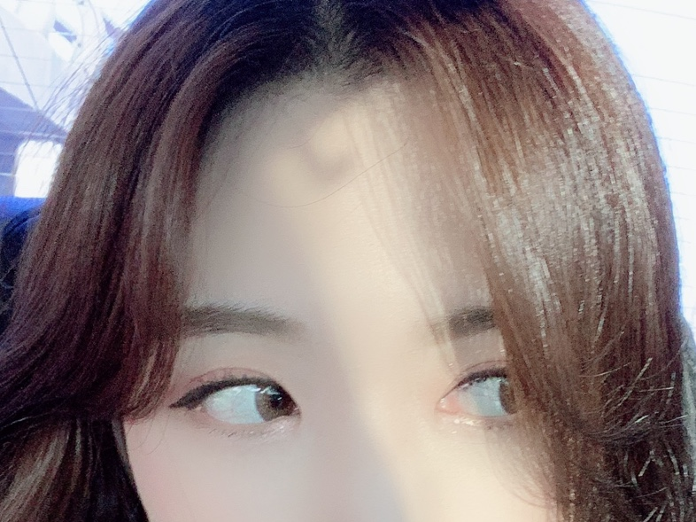
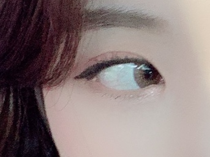
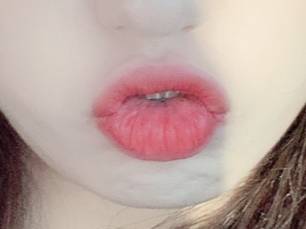
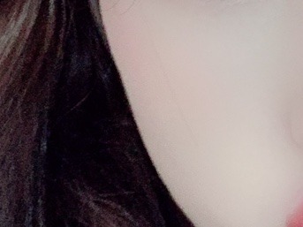

Hair Design
애쉬브라운 염색
뿌리 볼륨을 줘서 머리 숱이 풍성해 보이도록 한다.
앞머리와 옆머리가 자연스럽게 이어지는 것이 가장
중요해야되는 부분
c컬펌이 풀린 부분은 안쪽으로도 넣어주고,
바깥으로도 뻗치게 해 자연스러운 느낌을 준다.

Eyes Make-up
캐치아이 브라운 캣 - 브라운 렌즈
대체로 핑크빛 도는 섀도우와 펄감이 많은
섀도우를 섞어 사용한다.
아이라인은 점막을 다 채우고 살짝 위로
올라가게 그린다.
마스카라는 컬링을 살려 위로 올라가게 잘
고정시켜준다.

Lip Make-up
건조하지 않게 립밤을 꼼꼼히 발라준다
누디한 색의 제품을 전체적으로 깔아준다.
매트한 타입의 핑크빛 도는 틴트를 가운데
중심으로 바른다.

Skin Make-up
21호 파운데이션을 바른다.
컨실러로 잡티나 다크서클을 가려준다.
쉐이딩은 자연스럽게 턱과 광대 위주로 해준다.
블러셔는 입술색과 맞춰 핑크빛 도는
가루타입제품으로 사선을 그려 바른다.